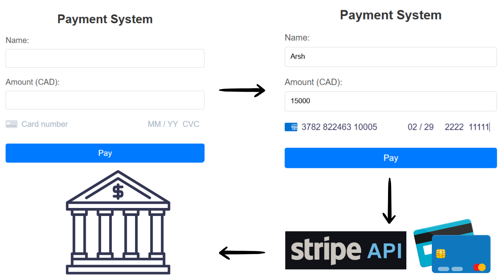
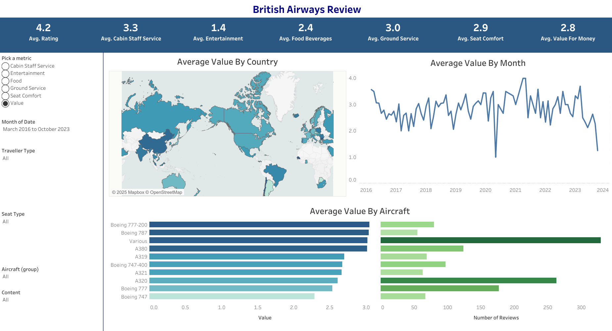
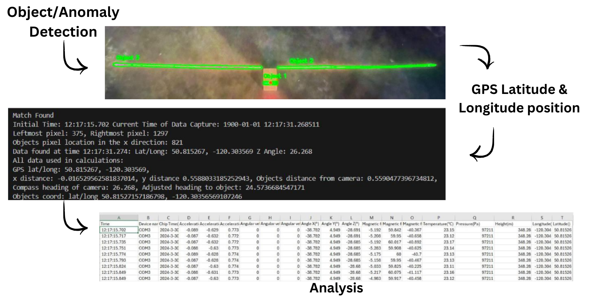
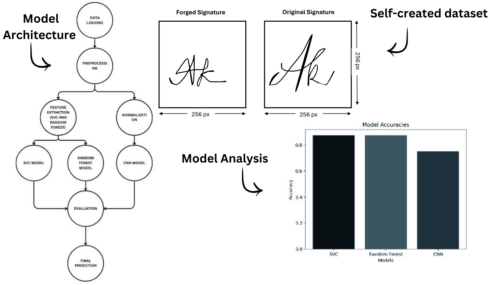
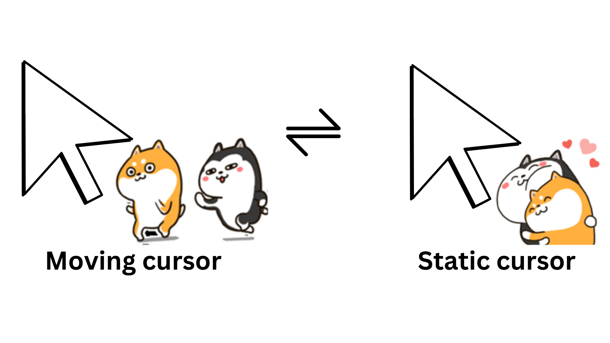

My Projects

Paris Olympics 2024 Data Engineering Project
Built an end-to-end data pipeline to analyze the Paris Olympics 2024 dataset, involving Azure Data Factory for ingestion, Azure Data Lake Gen 2 and Azure Databricks for transformation. Enhanced data accessibility and provided actionable insights into medal counts and performance trends.
Payment System Application
Developed a secure payment processing application using Python, integrating the Stripe API for payment validation and transaction handling. The app features user authentication, secure input validation, and real-time payment processing, providing a seamless and efficient experience. Designed with scalability in mind for future enhancements and wider application.
British Airways Data Analysis Project
Utilized SQL and Tablue to analyze and visualize operational data for British Airways. Optimized key performance metrics and provided data-driven recommendations for operational improvements.
Runway Inspection Model and Geospatial Analysis
Engineered a machine learning model using OpenCV to detect runway anomalies with 92% accuracy. Improved inspection efficiency and ensured safety with precise GPS mapping of issues.
Forged Signature Detection System
Created a signature verification system using Python and machine learning, achieving 87% accuracy in detecting forgeries. Strengthened document security and ensured fraud prevention.
Pointer Pursuit
An interactive desktop app featuring an animated character that follows your mouse in real-time. Built with Python, Tkinter, and PIL, it dynamically switches between running and stationary animations based on cursor movement, adding a playful and engaging touch to your desktop.